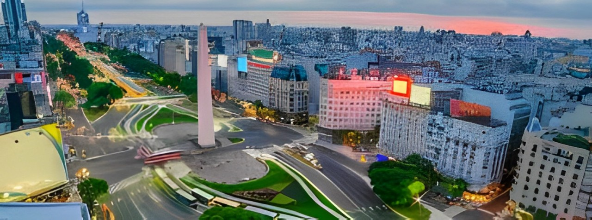

Nosso grupo é um grupo cuja dedicação está em pesquisar a relação entre literatura, música e política, especificamente entre países sul-americanos e o México, sendo esses respectivamente: Argentina, Brasil e o próprio México.
grupo é composto por 5 pessoas, sendo elas: eu (Paulo César), Luan Portez, Samuel Cajé, Nicolas Barbosa e Luiz Guilherme. Somos alunos da CTII 117 do curso de Informática integrado ao Ensino Médio do IFSP de Cubatão. Nos interessamos pelo tema pois o reconhecimento dos povos latino-americanos é mínimo comparado a outros temas e pautas. Além disso, a investigação da semelhança de trajetória de certos povos é, no mínimo, algo interessante, especialmente pelo fato da miscigenação euro-americana, que abarca desde música até arte, literatura, entretenimento, culinária e, claro, a política.
Mas por que justamente literatura e música? Porque ambas são formas de resistência. Como dito anteriormente, focamos nas semelhanças da luta de cada povo.
Em suma, nós somos os desbravadores da América Latina e abordaremos formas de arte como Literatura e Música e seus contextos historicos dentro de seus países
Abordar o impacto da arte, mais especificamente da Música e da Literatura e sua influência no povo contra a Ditadura em alguns países da América Latina
Abordaremos formas de arte como Literatura e Música e seus contextos historicos dentro de seus países
Nosso grupo se chama "Los desbravadores de La Latino America" e é formado por: Luan Portes, Luiz Guilherme, Paulo Cesar, Samuel Caje, Nicolas Barbosa.
Una dictadura o régimen militar es una forma de gobierno autoritario donde el poder se concentra en manos del militares. (claramente) ¿Y esto qué tiene que ver con nuestro trabajo? Una forma de gobierno autoritario busca, entre otras cosas, la precarización y desguace de los medios y formas de comunicación porque las críticas se da a través de estos medios. Y no sólo los grandes medios periodísticos se ven perjudicados, pero también lo hacen las formas de arte, ya que también expresan la opinión y forma de pensar de la gente, así también la crítica.
Sin embargo, así como el arte pertenece al pueblo y el pueblo lucha, el arte también pertenece al pueblo y tambien lucha... y es cómo ocurre esta lucha lo que veremos en nuestro trabajo. Más concretamente arte y literatura. Pero antes de ver cómo se ven afectadas estas áreas, vale la pena mirar primero el contexto histórico en el que se encuentran los países objeto de discusión en nuestro trabajo. donde contexto histórico es el conjunto de cosas importantes e importantes hechos relevantes ocurridos durante un período determinado de tiempo, así como la forma en que funcionaban las cosas en un momento dado.
En resumen, se puede ver que lo que todos estos gobiernos tenían en común fueron las represiones sociales y una deliberada y constante de silenciar al pueblo, por mucho que no representara al pueblo. Pero finalmente todos terminaron fracasando debido a las constantes actividades sociales. Las luchas populares para exigir derechos, denuncias y logros. Através de la base, la revuelta y el descontento social, hicieron y se organizaron grandes movimientos sociales y lograron grandes cosas y resultados, tenga en cuenta que como máximo en un período de 7, 21 y 40 años respectivamente. (Argentina, Brasil y México). Y una de las formas que tiene la gente de organizarse, rebelarse, actuar, reprimir, luchar y conquistar era (y sigue siendo, por tanto, importante) medio del arte. Pero ahora que tenemos un poco de contexto, ¿cómo funciona esto? ¿Qué manifestaciones artísticas formaron parte de estos procesos?
El tango, originado en los barrios bajos de Buenos Aires y Montevideo, es una expresión artística que trascendió su origen como música y danza para convertirse en un símbolo de identidad y resistencia en América Latina. Durante las dictaduras militares del siglo XX, el tango se utilizó como una forma sutil de protesta, abordando temas de libertad y justicia en sus letras poéticas, muchas veces esquivando la censura. Más que un género musical, se transformó en un refugio cultural y una herramienta para preservar la memoria y la identidad frente a la represión, consolidándose como un poderoso legado de lucha y expresión.
"La Cumparsita", uno de los tangos más famosos compuestos por Gerado Matos Rodriguez 1916, también tuvo su papel en la resistencia durante los períodos de represión, especialmente en la Argentina bajo la dictadura militar (1976-1983). Aunque no fue así Escrito como protesta, su interpretación y uso en contextos de lucha por la libertad y los derechos humanos lo convirtieron en un símbolo de resistencia. Durante la dictadura, el tango, que es una expresión cultural profundamente arraigada en la identidad argentina, fue utilizado como forma de protesta y memoria. Muchos artistas y músicos reinterpretaron "La Cumparsita" y otras canciones clásicas para expresar el dolor y el anhelo por los desaparecidos y la represión que enfrentaba el país. El tango se convirtió en una forma de mantener viva la memoria de quienes sufrieron durante este período.
Una canción que destacó como forma de resistencia durante los periodos de represión en América Latina es "Gracias a la Vida"*, compuesta por Violeta Parra. Esta canción se convirtió en un himno de lucha y esperanza, especialmente durante la dictadura de Pinochet en Chile. La letra celebra la vida y sus bellezas, pero también transmite un profundo sentimiento de anhelo y dolor, que resuena fuertemente en aquellos que han sufrido bajo opresión.
"Por una Cabeza", compuesta por Carlos Gardel y Alfredo Le Pera en 1935, es una de las canciones más emblemáticas del tango argentino. Si bien la canción en sí no fue escrita como una protesta o una forma de resistencia, terminó convirtiéndose en parte de la cultura y la identidad argentina, especialmente durante la dictadura militar (1976-1983). Durante este período oscuro en Argentina, el tango, incluido "Por una cabeza", fue reinterpretado y se le dio un nuevo significado. La música no sólo evocaba sentimientos de nostalgia y anhelo, sino que también sirvió como medio para expresar el dolor y la pérdida que muchos argentinos sintieron debido a la represión política y la desaparición de miles de personas.
Además, "El Matador" de la banda Los Fabulosos Cadillacs fue utilizado en manifestaciones y protestas contra la injusticia y la opresión. La canción habla de luchar contra la adversidad y se convirtió en un himno para muchos jóvenes que buscan un cambio social.
Con «Pedro Páramo», Juan Rulfo nos lleva de viaje por el realismo mágico. Esta obra, llena de voces de muertos e imágenes vívidas del México rural, es más que un libro; es una experiencia sensorial. La narración, que entrelaza recuerdos y realidades, reta al lector a desentrañar los misterios de Comala, un pueblo habitado por almas muertas.
En «Aura», Carlos Fuentes nos presenta un cuento gótico ambientado en Ciudad de México. En esta breve pero intensa historia, un joven historiador se ve arrastrado al misterioso mundo de Aura, una enigmática mujer. El libro explora temas como la obsesión, la identidad y lo sobrenatural, todo ello envuelto en una atmósfera oscura y cautivadora. También es uno de los pocos libros escritos en segunda persona que he tenido el placer de leer.
El camino que han seguido las lenguas indígenas, desde la tradición oral, para llegar a la escritura y de ahí a la literatura, ha sido arduo y complicado. Este artículo explora y documenta las fases principales de dicho recorrido, los trabajos de la etnografía, la antropología, la lingüística y los muchos esfuerzos editoriales que se han realizado para hacer frente a “la amenaza de muerte de muchas lenguas”."
Autores como María Sabina y sus poemas chamánicos ponen de manifiesto la espiritualidad y las tradiciones de los pueblos indígenas. Estas obras son fundamentales para entender la diversidad cultural de México y la resistencia de las comunidades indígenas, que siguen luchando por el reconocimiento y la valorización de sus historias y tradiciones.
Fue uno de los primeros en denunciar la represión de la dictadura. Su obra Carta abierta de un escritor a la Junta Militar, publicada en 1977, es un ejemplo notable que desenmascara los abusos del régimen y el impacto en la sociedad. Poco después de su publicación, Walsh fue secuestrado y asesinado, convirtiéndose lamentablemente en una víctima más.
No necesita presentaciones, considerado uno de los grandes nombres de la literatura argentina Júlio Cortázar En su Livro de Manuel (1973) y otras obras explora la opresión y la represión que provocó el régimen
Poeta y escritor que fue exiliado por sus críticas, especialmente en sus obras como Carta Abierta y Dibaxu, que explora profundamente temas de la dictadura desde que sufrió por ella
En La casa de los conejos, Partnoy cuenta su propia experiencia como prisionera en un centro clandestino de detención. La obra es un testimonio visceral de los horrores que sufrieron miles de argentinos a manos del régimen.
Dramaturga y novelista, Gambaro denunció la violencia de la dictadura en obras como Antígona Furiosa, que reinterpreta el mito griego para reflexionar sobre la represión y el silencio forzado. Su obra expone los efectos deshumanizadores del autoritarismo en la sociedad.